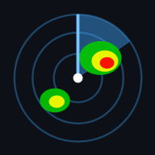

WeatherBoy Admin
Change the live site's layout, widgets, banner and background. Changes go live about a minute after you publish.
🔑 Sign in
Paste your GitHub access key for paups31/tampa-radar. It stays on this device only and is sent only to GitHub. You can preview changes without signing in; publishing needs the key.
How do I get a key?
- On a computer, sign in to github.com as paups31.
- Open Settings → Developer settings → Fine-grained tokens → Generate new token.
- Name it WeatherBoy admin and choose an expiration (for example 90 days).
- Under Repository access choose Only select repositories → tampa-radar.
- Under Permissions → Repository permissions, set Contents to Read and write. Leave everything else as is.
- Click Generate token, copy it, and paste it above. Treat it like a password: don't share it.
Lost or worried about a key? Delete it on that same GitHub page and make a new one.
Signed in as with permission to publish.
🕘 History and undo
Every publish is saved. Restore any earlier version; restoring is itself saved, so it can be undone too.
Sign in to see the history.
🧑💻 Code (advanced)
Code changes are made in GitHub's own editor, which keeps full history of every edit. Best on a computer. A mistake in code can break the site, so preview locally or ask Claude when in doubt.